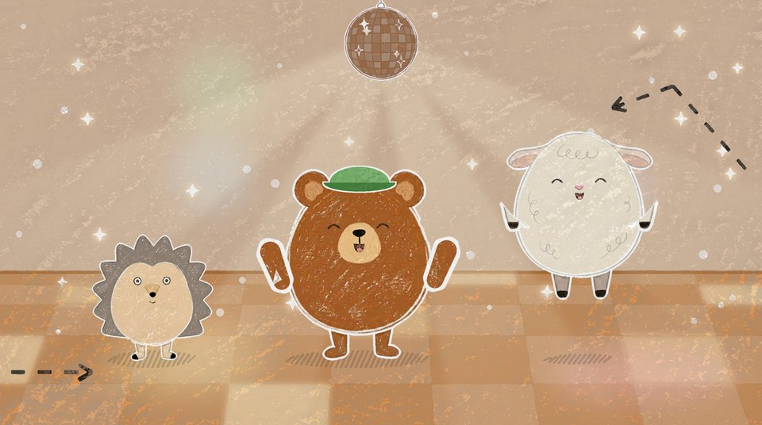

Bruna sången storyboard
Avsnitt 007, första utkast. Bilderna är byggda av utklippen i assets/ med ansiktena ritade i kod. Pilarna visar rörelsen.
Intro

(titeln syns, ingen röst)
Samma intro som 003–006 (”Kort i himlen”) med nytt nummer och ny titel: Avsnitt 7 · Bruna sången, titeln i brunt. Renderat i ../intro/ (intro-med-jingel.mp4, 11,3 s, kapas till 11 s i klippet som 006).
fastKritan ritar

(skrrrrt)
”Kritan ritar …”: den bruna kritan ritar en liten brun lastbil från sidan: flaket bak, ett öppet säte mellan två pucklar och en kort motorhuv fram, och sist en ljusgul lampa på huven.
1 papper
(skrrt, skrrt)
”vad kan det vara?”: ett runt hjul under flaket, och ett hjul till, medan det sjungs.
1 papper
(skrrt)
Gissningspausen är bara ca 1 s i tagningen (0:10.3–0:11.2; regeln är 4–5 s), så bilden håller frågan ett slag: kritan har ritat en liten grön flagga på en pinne bak (duken bakåt), den sista ledtråden, och lyfter bort så att det syns.
1 papper
(tut-tut)
”En lastbil! En brun lastbil! Tut-tut, nu kör vi!”: lastbilen skumpar till och kritan lyfter ut. Sist åker kameran in i teckningen, dit den riktiga lastbilen står i 03.
1 papperA · Vägen

(swoosh)
”Tut-tut”: zoom in i den ritade lastbilen, den blir Bulles lastbil på vägen. Bulle sitter redan i den med sin gröna keps.
zoom in
BULLE: Hej hej!
Bulle vinkar till tittaren, en vinkning.
3 närbild Bulle
”nu kör vi!”: han tar ratten igen och tittar framåt.
3 närbild Bulle
(brum, brum)
Lastbilen rullar i gång: vägen glider, hjulen rullar, björkar, granar och buskar glider förbi långt bak (parallax). Direkt in i vers 1.
2 körscen
”Björnen kör sin bruna lastbil”: närbild, Bulle med tassarna på kanten gungar i takten och skrattar.
3 närbild Bulle
(brum, brum, brum)
”Brum, brum, brum – på vägen här!”: körscenen, lastbilen skumpar till en gång per brum. Bulle ropar med.
2 körscen
”Björnen letar efter brunt”: Bulle spanar och pekar åt vänster och lutar sig dit, sedan åt höger, så att barnet kan peka med. ”leta med – jag och du!”: han tittar på oss och nickar i takt medan kameran åker in mot honom, och sedan ut igen.
2 körscenRefräng

(stamp) · (pop)
Rad 1 ”Brun, brun, brun! (Brun, brun, brun!)”: vägen, halvbild, lastbilen stor i mitten. På varje ”brun” stampar Bulle, lastbilen skumpar och ett brunt tassavtryck i krita poppar upp på vägen framför hjulen, tre i rad; på ekot tre till, så att det blir sex. Kameran gör en liten knuff in per stamp.
6 dansbild (vägen)
(swoosh) · (brum, brum)
Rad 2 ”Lastbil, lastbil – (brum, brum!)”: kritsvep till kanelbullsberget. Halvbild: lastbilen på vänster tredjedel kör redan (hjulen snurrar), bullen till höger. Kameran följer med åt höger, stora vita avgaspuffar på varje ”brum”. Lastbilen står aldrig still vid kanten.
6 dansbild (berget), kameran följer
(boing)
Rad 3 ”Upp på stora backen, (upp, upp!)”: kameran följer lastbilen uppför bullens sida, lastbilen i mitten och backen som en diagonal. På varje ”upp” ett litet hopp och små vita pilar upp som klistermärken. Kaninen guppar.
6 dansbild (berget), kameran följer
(ooh) · (wiii)
Rad 4 ”nerför sidan – vii!”: på toppen stannar lastbilen ett halvt slag, sedan susar den nerför högra sidan med fartstreck i krita bakom. Kaninens öron fladdrar, Bulle har armarna upp (ratten kvar). Kameran följer ner och landar vid bullens fot på höger tredjedel.
6 dansbild (berget), kameran följer
(swoosh) · (slurp) · (mums)
Rad 5 ”Kolasås och choklad – (mums, mums!)”: kameran zoomar ut så att hela bullen och båda flaskorna syns, hela från lock till pip. På ”Kolasås” klämmer kolaflaskan en tjock vågig kolarand över bullen, på ”choklad” chokladflaskan. På ”mums, mums” guppar flaskorna två gånger och glider upp ur bild; Bulle slickar sig om munnen vid foten till höger.
6 dansbild (berget), helbild
(glitter)
Rad 6 ”allt är brunt – hurra!”: samma vida bild, himlen glöder varmbeige och små bruna kritstjärnor och hjärtan poppar upp ur bullens topp. Bulle med armarna upp på ”hurra”. Kameran går långsamt lite in.
6 dansbild (berget)
(tut-tut) · (ding)
Rad 7 ”Tut, tut, tut, tut –”: klipp till närbild på ratten. Bulles tass trycker på den gröna tutknappen fyra gånger, och varje tut ger en liten vit ljudring. Kaninen tittar fram bakom honom.
3 närbild (ratten)
Rad 8 ”vad är brunt? Titta ut!”: klipp till vägen, närbild på Bulle i lastbilen. Han håller en tass över ögonen och tittar åt vänster, sedan åt höger, och kameran glider åt det håll han tittar, in i nästa bruna sak.
3 närbild Bulle (vägen)A · Vägen

(dunk)
”Vad är brunt? (Vad är brunt?)”: lastbilen stannar vid en gran vid vägkanten (högra tredjedelen, bara barren syns, stammen är bortskuren så att kotten är det enda bruna). En brun kotte lossnar ur grenarna, trillar ner och studsar på vägen. Bulle blir förvånad och tittar dit.
2 körscen
”Titta där! Kotten är brun”: kotten ligger på vägen under granen och Bulle tittar på den.
2 körscen
(dunk, dunk, dunk)
”dunk, dunk, dunk!”: närbild, kotten studsar tre gånger på bilens kant bredvid Bulle, och Bulle knackar sig försiktigt på huvudet, en gång per dunk (tassen når bara upp till örat, se frågorna). Barnet kan knacka med.
3 närbild Bulle
”Vad mer är brunt? Kan du se?”: frågan till tittaren. Bulle tittar ut mot tittaren med huvudet på sned och tassarna uppåt, frågande.
3 närbild Bulle
”Kan du se?”: pausen är kort i tagningen (ca 1:05.8–1:06.2). Ledtråd: Bulle tittar tydligt ner på sin päls och kameran åker sakta in mot den.
3 närbild Bulle, inåkning
”Björnen är brun – och öronen med!”: Bulle klappar på magen och pekar upp mot sitt öra.
3 närbild Bulle
(brum, brum, brum)
”Brum, brum, brum!”: Bulle klappar på magen tre gånger och brummar nöjt. Barnet kan klappa sig på magen.
3 närbild Bulle
(brum, brum) · (pip)
Mellanspelet, instrumentalt (ca 14 s, 1:14–1:28): bara körning, inga nya saker. Vägen glider, björkar, granar och buskar glider förbi bakom, vita avgaspuffar, kaninen guppar på flaket. Bulle gungar i takten med tassarna på ratten.
2 körscenRefräng

(stamp) · (pop)
Rad 1 ”Brun, brun, brun! (Brun, brun, brun!)”: vägen, halvbild, lastbilen stor i mitten. På varje ”brun” stampar Bulle, lastbilen skumpar och ett brunt tassavtryck i krita poppar upp på vägen framför hjulen, tre i rad; på ekot tre till, så att det blir sex. Kameran gör en liten knuff in per stamp.
6 dansbild (vägen)
(swoosh) · (brum, brum)
Rad 2 ”Lastbil, lastbil – (brum, brum!)”: kritsvep till kanelbullsberget. Halvbild: lastbilen på vänster tredjedel kör redan (hjulen snurrar), bullen till höger. Kameran följer med åt höger, stora vita avgaspuffar på varje ”brum”. Lastbilen står aldrig still vid kanten.
6 dansbild (berget), kameran följer
(boing)
Rad 3 ”Upp på stora backen, (upp, upp!)”: kameran följer lastbilen uppför bullens sida, lastbilen i mitten och backen som en diagonal. På varje ”upp” ett litet hopp och små vita pilar upp som klistermärken. Kaninen guppar.
6 dansbild (berget), kameran följer
(ooh) · (wiii)
Rad 4 ”nerför sidan – vii!”: på toppen stannar lastbilen ett halvt slag, sedan susar den nerför högra sidan med fartstreck i krita bakom. Kaninens öron fladdrar, Bulle har armarna upp (ratten kvar). Kameran följer ner och landar vid bullens fot på höger tredjedel.
6 dansbild (berget), kameran följer
(swoosh) · (slurp) · (mums)
Rad 5 ”Kolasås och choklad – (mums, mums!)”: kameran zoomar ut så att hela bullen och båda flaskorna syns, hela från lock till pip. På ”Kolasås” klämmer kolaflaskan en tjock vågig kolarand över bullen, på ”choklad” chokladflaskan. På ”mums, mums” guppar flaskorna två gånger och glider upp ur bild; Bulle slickar sig om munnen vid foten till höger.
6 dansbild (berget), helbild
(glitter)
Rad 6 ”allt är brunt – hurra!”: samma vida bild, himlen glöder varmbeige och små bruna kritstjärnor och hjärtan poppar upp ur bullens topp. Bulle med armarna upp på ”hurra”. Kameran går långsamt lite in.
6 dansbild (berget)
(tut-tut) · (ding)
Rad 7 ”Tut, tut, tut, tut –”: klipp till närbild på ratten. Bulles tass trycker på den gröna tutknappen fyra gånger, och varje tut ger en liten vit ljudring. Kaninen tittar fram bakom honom.
3 närbild (ratten)
Rad 8 ”vad är brunt? Titta ut!”: klipp till vägen, närbild på Bulle i lastbilen. Han håller en tass över ögonen och tittar åt vänster, sedan åt höger, och kameran glider åt det håll han tittar, in i nästa bruna sak.
3 närbild Bulle (vägen)Kritsvep

(skrrrrt)
”Titta ut!”: kritsvep i ängens himmelsblå, från vänster till höger.
kritsvepB · Ängen

(brum, brum)
”Vad är brunt?”: ängen. Lastbilen rullar in från vänster mot filten, där Ludde sitter med korgen full av kanelbullar. Fia fladdrar förbi högt över ängen.
4 helbild
(boing)
2:01 avsnittstid, ”(Vad är brunt?)”: Bulle kliver ur lastbilen. Kameran zoomar in på honom: ett kort, lugnt hopp ner bredvid bilen (ingen snurr). Från nu står och går han i gräset med ben, ända till delningen i 14.
3 närbild Bulle, inzoomning
LUDDE: Hej!
”Titta där! (Titta där!)”: Bulle står vid filten och pekar på korgen, Ludde håller fram den (bara bild, ingen röst).
4 tvåbild
BULLE: Tack! (pling)
”Bullen är brun –”: Bulle har fått en kanelbulle och håller upp den (pling).
4 tvåbild
”snurr, snurr, snurr!”: närbild, Bulle håller bullen i ena tassen och ritar dess snurra i luften med den andra, tre varv. Barnet kan rita med.
3 närbild Bulle
(Åh nej!)
Vers 2, musiken blir tunn. ”Oj, oj! Bullen trillar, åh nej!”: bullen glider ur Bulles tass och studsar en gång i gräset vid filtens kant. Bulle står i gräset; han och Ludde blir förvånade.
4 tvåbild
(rull, rull)
”Rull, rull, nerför backen –”: helbild, bullen rullar nerför backen åt höger, ett skutt per ”rull” (spökringarna visar var den var). Den lutar och skuttar men snurrar inte runt.
4 helbild
”bort!”: bullen rullar vidare åt höger på den platta marken, mindre och mindre, nästan ut ur bild. Bulle tittar efter den.
4 helbild
(snyft)
”Björnen är ledsen – snyft.”: närbild, Bulle står i gräset, ledsen med en liten tår.
3 närbild Bulle
”Vem kan hjälpa? (Vem kan hjälpa?)”: närbild, Bulle tittar ut mot tittaren med tassarna uppåt och en liten O-mun, frågande, inte ledsen längre.
3 närbild Bulle
Tystnaden, ca 2 s (2:19.6–2:21.6), där barnet hinner ropa ”Igelkotten!”: utsnitt nere vid backens fot. Bullen rullar sakta mot högerkanten, och Igges nos och taggar tittar fram bakom blommorna (ledtråden). Inget annat rör sig.
4 helbild (närmare foten)
Vers 3, hela shufflen tillbaka. ”Igelkotten! (Igelkotten!)”: Igge rullar in från höger som en taggig boll, mot bullen (lutar och skuttar, vänds aldrig).
4 helbild (närmare foten)
(stopp!)
”Rullar ihop sig – stopp!”: Igge ligger hoprullad, bullen rullar emot honom och stannar.
4 helbild (närmare foten)
BULLE: Tack!
”Bullen stannar – tack, tack, tack!”: Igge har rullat upp sig och knuffat upp bullen till filten med nosen. Bulle (som klev ur lastbilen i 11a) står på filten; han vinkar tack, en gång per ”tack”, och Ludde nickar.
4 tvåbild (filten)
”En bit var – till alla tre!”: Ludde bryter bullen i tre bitar. Bulle och Ludde håller upp sin bit, och Igges bit ligger framför honom på filten (han har inga armar).
4 tvåbild (filten)
”Mums, mums, mums”: alla tre äter sin bit, en tugga per ”mums”.
4 tvåbild (filten)
”– hurra!”: alla sträcker armarna upp och Igge hoppar. Bullen är slut, så händerna är fria till dansen.
4 tvåbild (filten)Danspaus · discot

(boing!)
”Danspaus!”: klipp till discot, ljusbrunt/beige med ett rutigt golv i bruna toner och en stor brun discokula som snurrar sakta och glittrar. Mjuka ljusfläckar glider över golvet (lugnt, inget blinkar). Bulle har klivit ur lastbilen och dansar stor mitt i bild med armarna upp.
6 dansbild (discot)
(boing!)
Efter ”Danspaus!”: Ludde hoppar in från höger och Igge trippar in från vänster, alla tre dansar tillsammans (samma bild utan klipp).
6 dansbild (discot)
”Hoppa, hoppa!”: solobild, grodan Gurra ensam och stor mitt i bild, hoppar.
6 dansbild (discot)
”Rulla runt!”: solobild, Igge rullar ihop sig till en boll och rullar en bit åt sidan och tillbaka, gungar lite. Bollen vänds aldrig runt (2D-urklipp).
6 dansbild (discot)
(klapp, klapp)
”Klappa, klappa!”: solobild, musen Mille klappar med armarna upp.
6 dansbild (discot)
(pop, pop, pop)
Sista refrängen. ”Kotten, björnen, bullen – brun! (Brun!)”: saken på ordet slås upp stor mitt i bild på en vit kritskiva (som 005:s och 006:s disco, inga figurer), en per ord, och flyger upp i raden av små vita skivor överst runt kulan, från vänster i sjungen ordning. Bilden visar bullen, med kotten och björnen redan i raden.
6 dansbild (discot)
”Brun, brun, brun! (Brun, brun, brun!)”, tre gånger i tagningen: alla fem i ett svagt V gör björnstampet, Bulle i mitten och störst.
6 dansbild (discot)
(brum, brum) · (pop)
”Lastbil, lastbil – (brum, brum!)”: Bulle sitter i lastbilen, stor mitt i bild, och den skumpar en gång per ”brum”. Lastbilen poppar upp som fjärde och sista småbild i raden.
6 dansbild (discot)
(tut, tut)
”Hej då! Tut! Hej då, lilla vän! Tut, tut!” och mellanspelet efter: kvar i discot, raden av småbilder ligger kvar överst. Bulle i lastbilen rullar från vänster tredjedel in till mitten och vinkar, tutar på varje ”tut”.
6 dansbild (discot)Avslutning

(swoosh)
Outrot ”Hej då, lilla vän! Tut, tut!” (3:10–3:18.5): Bulle i lastbilen vinkar, och kritirisen sluter sig runt hans ansikte på sista ”tut, tut”, håller, stängs, en stjärnglimt i det svarta och slutar svart när sången tar slut.
kritirisAnteckningar
- Ingen säger det som sjungs. Ekot sjungs av kören. Varje brun sak har en rörelse i bild: dunk (06b), brum (08c), snurr (11b).
- Refrängen är en dans (05, 09 och sista refrängen 16), lugn och likadan: björnstampet på vägen, sedan kritsvep till kanelbullsberget där lastbilen kör upp och ner över bullen (alltid åt höger, lutad men aldrig vänd), kolasås och choklad i kod, och zoom ut till vägen på ”Titta ut!”. Sista refrängen är klistermärken i discot som i 005.
- Lastbilen är i lager: flaggan, Bulle, karossen, Bulles armar. Den gröna kepsen och den gröna flaggan (005:s rosa omfärgad) är kod.
- Ängen har en låg grön backe i kod (plåten är platt), så att bullen kan rulla ner. Igge syns först i 13f (nosen bakom blommorna) och rullar in i 14a.
- Platshållare: inga, alla saker är riktiga bilder ur
assets/. Lastbilen är v2 (Sannas val); kanelbullen, kotten och Igge hoprullad är v1; byt iASSET. - Sångraderna under varje bild läses ur sang.md (♪ sjungs, gul lapp = paus eller lucka). Fetstilt = repliker.
- Tiderna läggs in i
SÅNGTIDöverst i bygg.py när rader.txt finns; resten räknas om. - Byggs om med
~/.claude/skills/ai-video/.venv/bin/python -I bygg.pyi den här mappen.